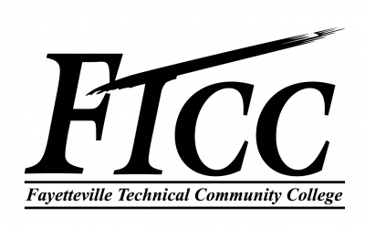
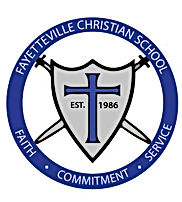

Implemented VIPKIDs curriculum in an online face to face education platform for Chinese students aged 6 to 12
Provided feedback and educational goals to students and parents

Fayetteville Technical Community College (Fayetteville, NC) - Teacher, Adult Education
April - August 2004
Taught sciences to adult students in the adult high school program.
Instructed in classroom and laboratory settings
Graded and scored student assignments and maintained student records.

Fayetteville Christian School (Fayetteville, NC) –Teacher
August 2003 – April 2004
7th/8th Grade Science, Boys 7th Grade Bible
Developed lesson plans during accreditation process
Worked one on one with my students, while also providing creative, fun, and challenging learning programs for the entire class.
Instructed in classroom and laboratory settings
Graded and scored student assignments and maintained student records.
ENTREPRENEUR
Steffes Event Services (Raleigh, NC) - General Manager, Principal Photographer, Event Coordinator
2013 - 2018
Provided excellent customer service, receiving awards for Customer Choice Best 2016, 2017 from Wedding Wire
Handled correspondence, booking meetings, and accounts receivable
Guided customers through contract provisions and explained how the interaction would work, including explanation of their rights
Responsible for the design and execution of weddings, other religious events and celebrations. In this role, I handled:
Vendor negotiations and oversight
Project management of events
Photographed and videoed events, which involved planning equipment logistics, adherence to strict timelines and timely provision of a high-quality product.
Production and design of photography customer products, including albums and video
SOFTWARE DEVELOPMENT
Applied Research Associates (Raleigh, NC) - Staff Scientist
2004 - 2013
Developed software for government clients in multiple programming languages, predominantly C++/C#
Maintained Object Oriented XML based database objects in proprietary database format
Wrote code to develop and serialize persistent C++ objects as XML entities
Implemented search routines in OODMS for data by type, XML entity name, and ID
Refactored OODB for efficiency and development accessibility
Managed software defects using Rational tools
Project Manager for WarFighter Wizard, a tool that encapsulated engineering tools into a user friendly HTML based interface designed for intelligence officers in the US military
Created and presented user requirements statements and participated in training programs to ensure user requirements were accurately captured
Adhered to CMMI certification standards and assisted in creating CMMI process documentation
Wrote and presented user documentation to stakeholders and clients, including government liaisons
Provided technical documentation of complex software interfaces for technical users